Trex is a vegetarian, but a mean one. He likes to torment grazers. His food
consists of fruit, and he likes to kick them around too.
Trex is a vegetarian, but a mean one. He likes to torment grazers. His food
consists of fruit, and he likes to kick them around too.
| Introduction | Getting Started | User Interface | World Objects | The Team |
This page explains the various animals, plants and other objects you can see and use
in ai.planet.
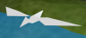
Birds roam the planet in flocks, looking for fruit, fish and insects to eat.
They can land and hop around, and they can also dive into the water to gripe their
prey. Birds can mate and create offspring.
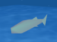
Fish live in the oceans in communities. Their diet consists of fruit and
an occasional insect to increase their proteine ration. They're food jealous however,
and like to toss food away from each other. Fish can mate and produce offspring,
and they're strictly monogamous in that matter. Like the shark and dolphin they try
to flop back into the water when landlocked.
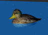
Ducks are community creatures and their habitat is the water surface. They
can mate, and they eat fruit and insects, however other small animals isn't frowned upon.
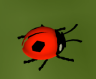
Ladybugs are tiny insects that are equipped with DNA, which allows them
to inherit their physical stats and food likings to their offspring. They are fruit
foragers and live in swarms. They can not only scrabble on land but equally well dive
in the waters.
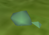
Turtles look unimpressive, but they're predatory munching machines. They just
try to eat everything. As they have a brain, they can learn which food is good for
them and which not.
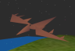
Hawks are grimly loners strifing the planet in search for delicious birds.
They don't hesitate to rob a conspecific's prey and claim the gobbet for themselves.
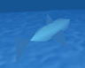
Sharks are the predators of the sea. Their favorite lunch is fish and a duck for
dessert. They also toss food away from other sharks.
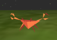
Crabs are lively and playful little creatures that feel comfortable on land
as they do in the water. They like to play ball and jump for food. Their favorite food
is fruit, and insects. They also have a brain, so each crab develops its own personal
taste over time.
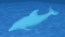
Dolphins strife the oceans in communities. They eat fruit and can pass smaller
landmasses by simply jumping over them.
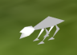
Rabbits are fruit foragers that can mate, and have DNA to inherit their
eating habits, and their physical attributes.
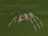
Ants are community insects eating fruit.
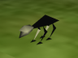
Mice are nimble little rodents that like fruit.
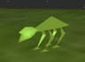
Grazers are big land mammals that wander around in herds and devour fruit
and vegetation.
Trex is a vegetarian, but a mean one. He likes to torment grazers. His food
consists of fruit, and he likes to kick them around too.
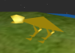
Tigers are predators, but their only preferred food is mice. Like all cats,
they like to play with their prey before killing it.
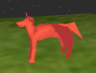
Foxes hunt swift-footedly for smaller animals and insects. They have DNA,
so they can inherit their attibutes, and they can find a partner and mate.
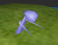
Bots are artificial objects that act like a robot, or avatar, which the user
can control or give commands.
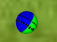
Balls are great for visualizing ai.planet's physics, and they are also the crabs'
favorite toy. Beach balls are very bouncy and float on water, while footballs are
less bouncy and sink in water.
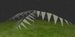
Evolving trees: These trees can turn into new colors, and evolve fruits with varying
buoyancy and bounce properties. For example, trees near a mountainside can evolve
fruits that don't bounce, allowing the trees to plant seeds on the hillside and
eventually inhabit the top of the mountain.
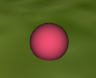
Evolving fruits and seeds: These come from evolving trees. Each one is potentially
slightly different from the parent tree. The color of each fruit is of a new shade,
and over time this will produce trees of completely new colors.
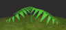
Apple trees: Apple trees drop apples, which are very bouncy and sink in water.
Their seeds float.
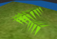
Orange trees: Orange trees drop oranges, which aren't very bouncy and float
in water. Their seeds sink.
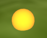
Fruits: Fruits are the main source of food on ai.planet, consisting
of apples and oranges. These contain health, and slowly rot until they disintegrate,
leaving behind a seed.
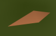
Seeds: Fruits contain seeds, and seeds turn into trees, only if they are on
land when they sprout, and if there is enough water. Animals usually don't eat seeds,
because they have no health value, so seeds travel further by being dropped by birds
and other animals.
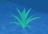
Aquatic plants: Plants that live underwater. Good source of fish food.
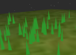
Grass: Grass grows at an exponential rate, and is used
to demonstrate the Grass-Rabbits-Fox algorithm.
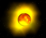
Suns: Suns orbit your planet and heat it, they also provide a light
source. Maximum four suns.
 Moons: Moons cause tidal water motions. As they pass by, water is drawn towards it.
Moons: Moons cause tidal water motions. As they pass by, water is drawn towards it.
 Asteroids: Meteors fall from space every now and then and smash your planet.
If it smashes into land, it will leave a crater and explode into a large burst of
flames. If it crashes into the ocean, it will just create waves.
Asteroids: Meteors fall from space every now and then and smash your planet.
If it smashes into land, it will leave a crater and explode into a large burst of
flames. If it crashes into the ocean, it will just create waves.
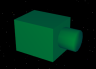 Missile defense: Missile defense satellites can be placed in orbit above the planet. These detect incoming asteroids and shoot a missile to intercept them. Defense satellites can be especially useful if you have random asteroids on and want to protect an area of land.
| Artificial Planet |